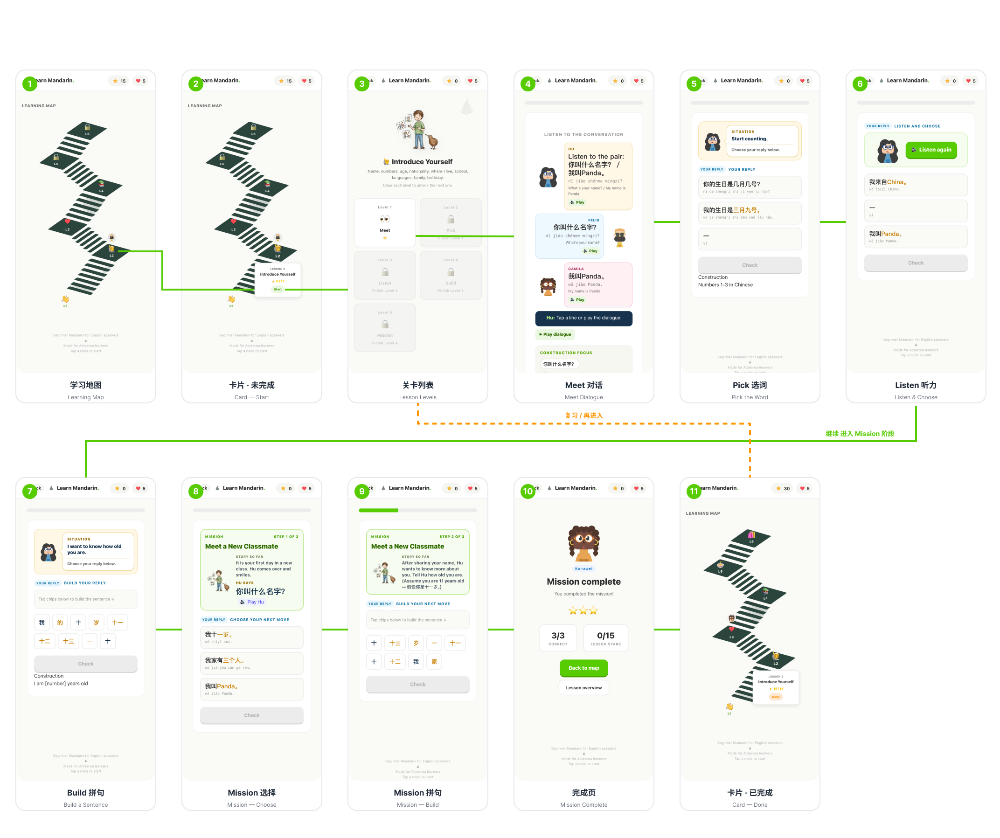

Con Mandarin
In design面向新西兰中学生汉语外语学习者的情境式汉语构式学习应用
- 一张学习地图：将零散学习素材整合为可追踪的完整学习路径
- 5 个等级任务：包含单词卡片、填空题、场景选择类练习
- 情境对话模块：搭配 AI 模拟回复功能
A scenario-based Chinese construction learning app for New Zealand secondary students learning Chinese as a foreign language.
- A learning map that ties scattered materials into one traceable path
- 5-level quests with word cards, fill-in and scene-choice drills
- Scenario dialogue with simulated AI replies